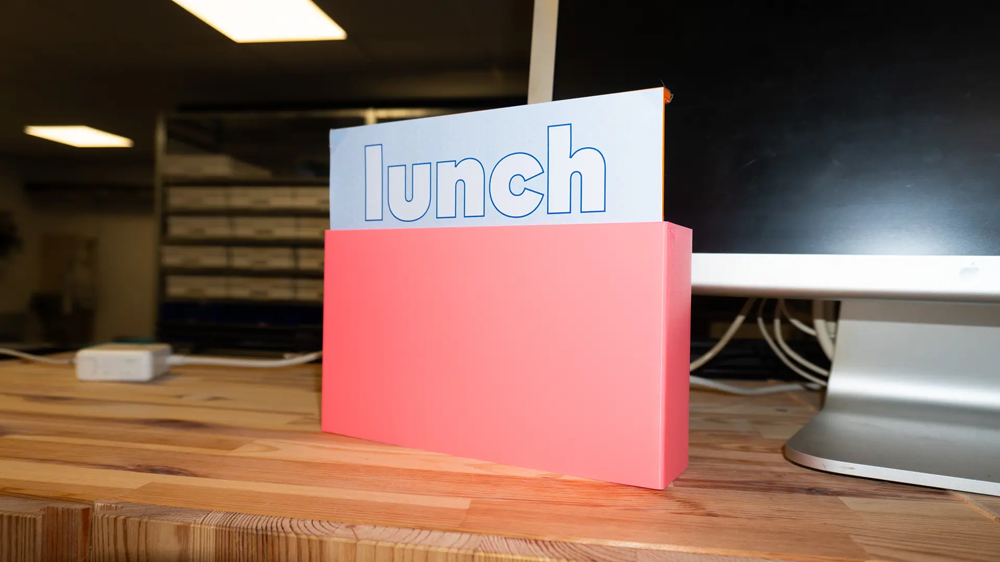
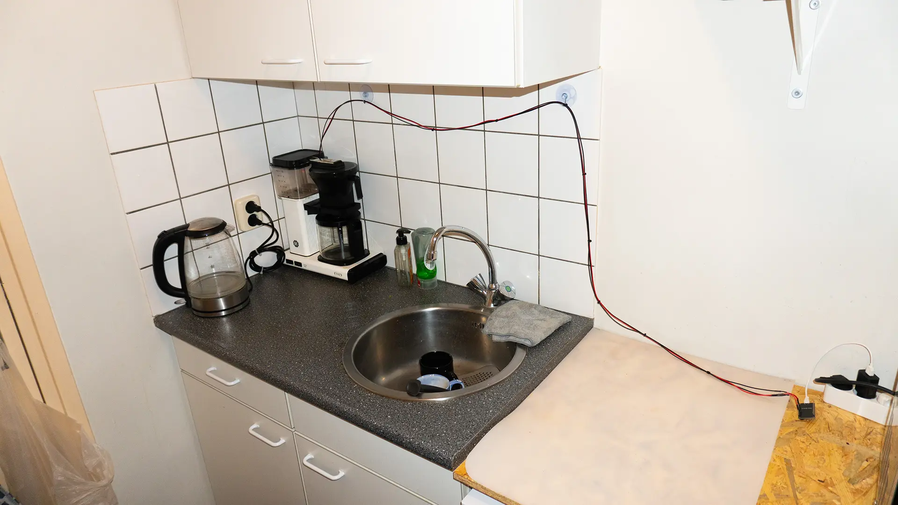
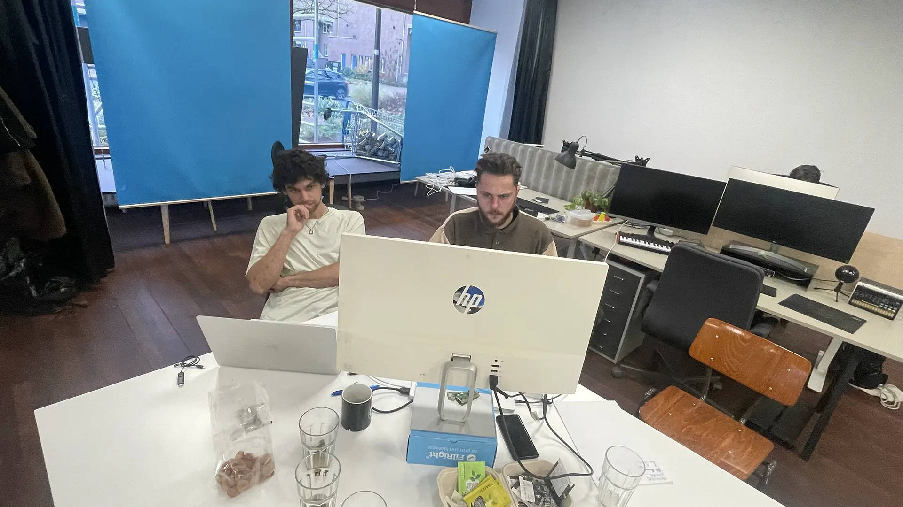

Both studios stemmed from a desire to share resources and company in a cultural field that asks you to work for yourself as a freelancer.
Can we extend this sense of solidarity beyond our studio walls, towards similar spaces that pop up everywhere?
Devices
lunch box
presence
the studio has their collective lunch
input
button @ SWSWS & XP
output
‘lunch’ sign @ SWSWS & XP
route
button > ESP > MQTT > ESP > servo motor
In both studios, the collective lunch is a stable moment of togetherness. A member starts cooking and after a while the rest hears ‘lunch is ready!’. The [lunch box] shares this moment with the other studio. This is the only device that works in both directions and requires action. When lunch is served we turn it on and a sign goes up in the other studio; until we turn it off and go back to work. When the other studio has lunch, the lunch box in our studio shows its sign.

hydration celebration
presence
someone has a drink at their desk
input
coaster @ XP
output
ambient lamp @ SWSWS
route
pressure sensor > ESP > MQTT > ESP > LED
Could we make connections between individual members? When wanting to get some work done, we often take a beverage to our desk. Coffee, English tea, kombucha, or just plain water. The [hybernation celebration] consists of a coaster at XP that senses whether it’s used, and an ambient lamp at SWSWS that glows up.
nerd alert
presence
they are updating their websites
input
wifi sniffer @ XP
output
flag @ SWSWS
route
wifi > ESP > MQTT > ESP > relais > servo motor
Part of running a shared space together is developing and maintaining its online presence (see this website). Whenever someone in XP pushes an update of their website or subdomain to the shared github, the [nerd alert] flag at SWSWS makes a celebratory pirouette.
coffee steam
presence
they are making coffee
input
water sensor @ SWSWS
output
light @ XP
route
water sensor > ESP > MQTT > ESP LED matrix
Entering the studio in the morning to the smell of coffee feels nice, it means someone already got started and you can probably still get a cup. When the coffee is put on in the evening though, you know it’s a tough day. [Coffee steam] senses if someone fills the water reservoir of the coffee machine at SWSWS and then makes a subtle glow at XP that lasts roughly as long as the coffee is still warm.

murmuring
presence
there is (sonic) activity at the other studio
input
mic @ XP
output
soundscape @ SWSWS
route
microphone > Pisound > internet stream > website > audio
In Oct the radio station at XP did an experiment to have a month-long live broadcast of anything happening at the studio. This created a nice way to check if someone was already in, but it also felt a bit privacy invading sometimes. The [murmuring] device turns the sound of the activity in XP into a soundscape that is broadcasted to SWSWS. The soundscape consists of ambient tones that repeat more frequently when there is more sound at the studio.
page of the day
presence
what are they reading today?
input
webcam @ SWSWS & XP
output
small screen @ SWSWS & XP
route
webcam > Raspberry Pi > website > Raspberry Pi > monitor
Sharing a space means we can share tools and resources like books. The [page of the day] consists of a small screen that fits on the shared library shelf, which shows a book that’s put on show in front of the webcam at the other studio. A little reminder, reference, inspiration or divination.
Process
We developed these devices over the past couple of months:
Jul
find moments and traces of togetherness
Aug
imagine possible devices & make teams
Sep
setup digital infrastructure (MQTT)
Oct
start programming and building
Nov
day at SWSWS to build devices
Dec
day at XP to finish devices
Jan
experience living/working with devices
Feb
reflect and tweak
Most devices function based on ESP modules that communicate through the MQTT protocol via a service called Shiftr (see the dashboard [here]), some are based on Raspberry Pi’s and work via websites.

Reflections
About solidarity and how to invite it through aesthetics
daily poetics
We noticed steering away from too explicit togetherness-signals to subtle gestures shared in more peripheral ways. On both sides this creates moments of honouring very mundane moments like coffee making.
ghostly presence
Unlike a direct signal like a webcam stream, the presence of the other was not continuously noticeable. Even – or maybe especially – when the tech wasn’t reliable yet, it invited imagining what would be happening at the other studio.
inviting speculation
While the signals are subtle, they are enough to start inferring things about the culture of the other studio. “They have lunch early, must be busy.” Even a more direct one like the book still leaves a lot of room: from which book is this page? why did they pick it?
diy aesthetics
Prototyping tech comes with a certain feel that one studiomate called Wallace & Grommit, which is to say it also feels cosy.
debugging galore
Making diy devices is a slow process. It required debugging along the way, from the sensor to the platform to the output.
Plans
We’re curious how it will feel to live and work with these devices in a state where they function stably and without daily intervention. We’ll update this site with our lessons.
Do you want to join the togethernet?
We’re thinking of developing the network so other studios in similar situations can join to share our sense of togetherness.
If we can secure funding, we’d like to further develop the devices, start pilots in other studios and develop the documentation (because it does require some technical knowledge).